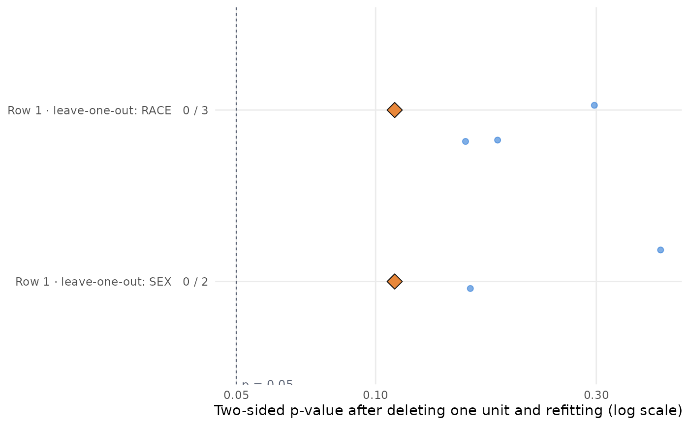

Each dot is one refit with one unit removed, on a p-value axis (linear by default, log on request), one strip per leave-one-out family; the diamond is the pre-specified analysis with nothing removed and the dashed line is alpha. Counts of deletions below alpha label each strip.
Examples
small <- mmrm::fev_data[mmrm::fev_data$USUBJID %in% paste0("PT", 1:60), ]
spec <- stress_spec(small, "FEV1", "USUBJID", "AVISIT", "ARMCD", "PBO", covariates = ~ FEV1_BL,
covariance = "cs", method = "Satterthwaite", vcov = "Asymptotic")
cen <- stress_census(spec, stress_loo(spec, by = "RACE"), stress_loo(spec, by = "SEX"))
if (requireNamespace("ggplot2", quietly = TRUE)) plot_pstrip(cen)
